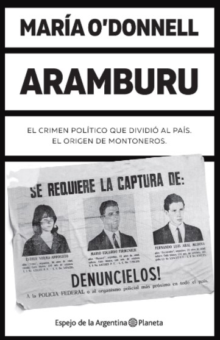

Tiempo libre
Me gusta viajar, descubrir nuevos lugares, pasear por ellos y conocer sus costumbres. Disfruto de andar por mi ciudad y visitar sus rincones.

Mi presento soy Sofia, profesional de ciencias económicas con mas de 20 años de experiencia en organizaciones sociales. Me he especializado en la gestión de procesos administrativos, contables y de recursos humanos. Actualemte estoy estudiando programacion, para indagar en nuevas areas laborales.
Me gusta viajar, descubrir nuevos lugares, pasear por ellos y conocer sus costumbres. Disfruto de andar por mi ciudad y visitar sus rincones.
La lectura me acompaña cuando tengo algun tiempito. Me gustan las novelas, biografias, para distraeme, ademas de leer temas relacionados con mi pofesion.
